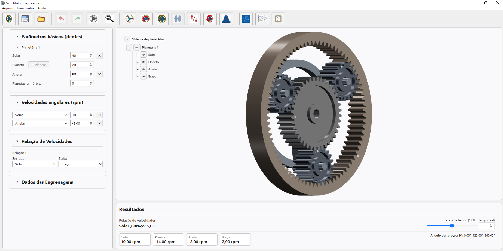

Desktop software
Engrenarium software
Engrenarium software is the broader environment for building and analyzing planetary gear systems. The articles on planetary gear design, CVT transmissions, Allison 1000, Ravigneaux and Ford Model T use this project as a visual and computational support for assembling gear sets, applying constraints and reading kinematic relationships.
The software helps turn a geometric arrangement into a model that can be discussed in terms of input, output, fixed elements, carrier motion and train value. Its role is not only to animate gears, but to support the reasoning that connects topology, tooth counts and angular speeds.
- Model simple and compound planetary gear sets.
- Test boundary conditions and couplings between elements.
- Support teaching examples before moving to detailed design checks.